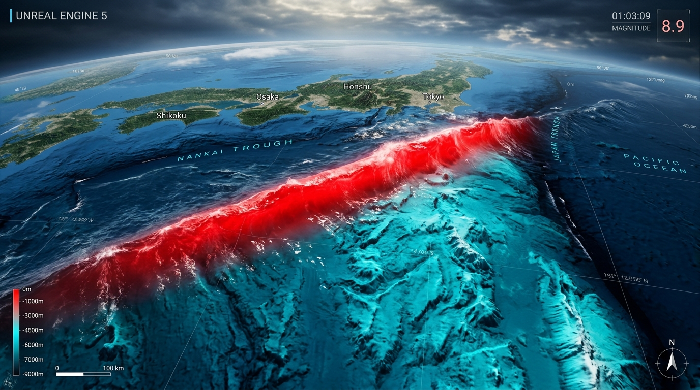
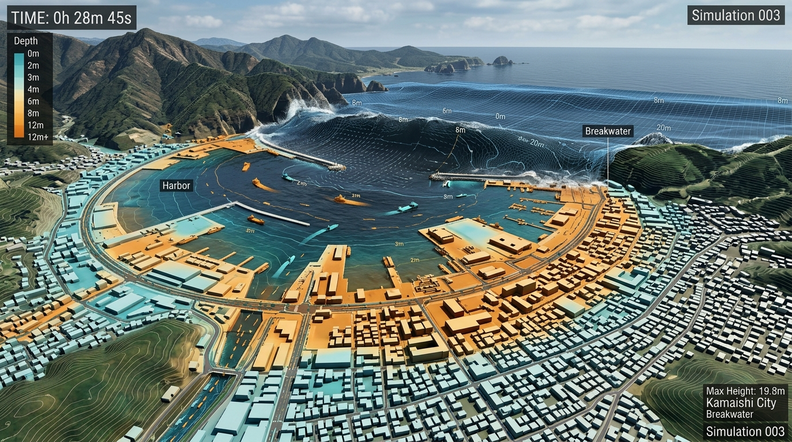

南海トラフ巨大津波を、
極限の解像度で可視化する。
Okada弾性転位モデルと2次元非線形浅水流方程式（SWE）を融合。外洋深海から沿岸各地への広域津波伝播を瞬時に解析し、宮古津波型・市街地遡上シミュレーション（Phase 2）へとシームレスに接続します。

4つの核心技術とアドバンテージ
学術基準の物理モデル、実務に即した連携出力、プレート境界の立体モデル、そしてモダンな高速実行環境を兼ね備えています。
厳密な物理数値モデル
岡田（Okada 1985）弾性転位モデルにより断層パラメータから初期海底地殻変動を算出。スタガード格子（Arakawa C-grid）を用いた2次元非線形浅水流方程式（SWE）と半陰解法マニング摩擦項で、浅瀬から海溝深海まで絶対発散しない安定した時間発展を実現。
USGS Slab2 プレート境界補間
沈み込むフィリピン海プレートおよび太平洋プレートの3次元形状データ（0.1度格子）を内蔵。「🎯 震源クリック指定」で地図上をクリックするだけで、プレート深さ・走向（strike）・傾斜（dip）を瞬時に双線形補間して物理的に妥当な断層面を自動構成。
市街地遡上連携用 CSV 出力
全期間時系列（方式A）に加え、第1波到達前2分を t=0 に正規化して無駄な初期時間を省いた「市街地連携用トリミング波形（方式B）」を出力。水位だけでなく東西・南北の流速ベクトル（U, V）や流向を含み、Phase 2 の都市浸水シミュレーターに即座に直結。
動画保存 (MP4) & 超高速計算
WebCodecs と MP4-Muxer による高速ハードウェアエンコードを搭載し、アニメーションをMP4動画としてワンクリックで直接保存。急深崖の数値ノイズを消去するShapiroフィルターを備え、120分の物理計算も数秒で一括実行できます。
フェーズ1（広域海洋）からフェーズ2（市街地浸水）へ
南海トラフ軸で発生した津波エネルギーを、沿岸港湾・市街地構造物の破壊シミュレーションへと橋渡しします。
広域海洋津波伝播シミュレーション
震源断層破壊（Okada） ➔ GEBCO海底地形 ➔ 広域浅水流方程式（SWE） ➔ 沿岸指定地点（室戸、潮岬、駿河湾、紀伊水道等）における波高・流速・流向を時系列記録。
市街地津波遡上・建築物浸水シミュレーション
宮古島等の実績モデルと同様の手法。湾口・沖合境界からトリミング波形を入力し、街路・防波堤・防潮堤・家屋への浸水深・流速・衝突力を詳細解析。

2つのエクスポート方式の使い分け
| 出力方式 | 開始時間 (t=0) | データ行数 (120分設定時) | 主な用途・メリット |
|---|---|---|---|
| 方式A 全期間データ (Full Timeline) | 地震発生の瞬間 (t = 0.0s) | 1,801 行 (4秒刻み) | 地震直後からの引き波・初動を含む広域海洋学的な全過程の検証・比較に最適。 |
| 方式B 市街地連携用トリミング (Trimmed City) | 第1波到達の 120秒前 (t = 0.0s に正規化) | 主要波通過までの約30〜45分間 | Phase 2 の都市シミュレーションの計算コストを大幅削減し、即座に浸水解析を開始。 |
内閣府想定・歴史地震・全国シナリオ
内閣府モデル（全11ケース）から歴史地震、2011年東北沖地震までワンクリックで切り替えて波形を比較できます。
南海トラフ全域連動 (M9.1)
Mw 9.1駿河湾から日向灘に至るトラフ軸全域（東海・東南海・南海・日向灘の4セグメント）が一斉に破壊する内閣府想定クラスの最大規模地震。最大すべり量20m。
インタラクティブ波面シミュレーター
マップ内をクリックすると、任意の震源から津波が広域に同心円状に伝播する物理波紋を体験できます。
製品版のご購入・入手方法
製品版アプリ（macOS DMG / Windows EXE / フルデータセット）のご購入・ダウンロードは、公式ストア（cyber-matrix）にて承っております。
macOS デスクトップ版
Tauri v2 による完全ネイティブアプリ。完全オフライン環境で超高速に動作。MP4動画・CSVの自動ダイレクト保存対応。
Windows デスクトップ版
NSISインストーラー形式。オフラインで高速実行可能。MP4動画・CSVの自動ダイレクト保存対応。
Webブラウザ & 開発版
Node.js環境があればローカル開発サーバーで即座に検証実行可能。
:5173cd nankai_trough
npm run dev
ドキュメント & マニュアル
詳細な操作マニュアル、物理方程式、CSVフォーマット仕様書をご用意しています。